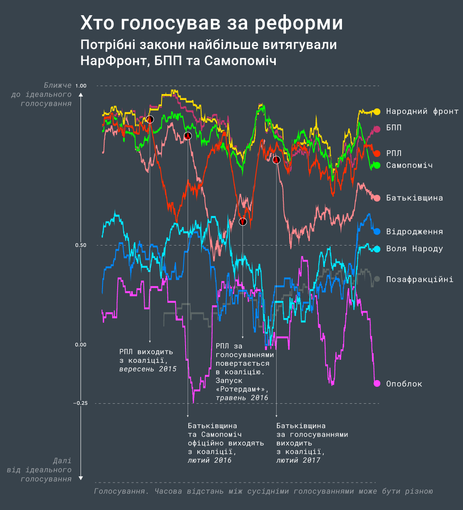
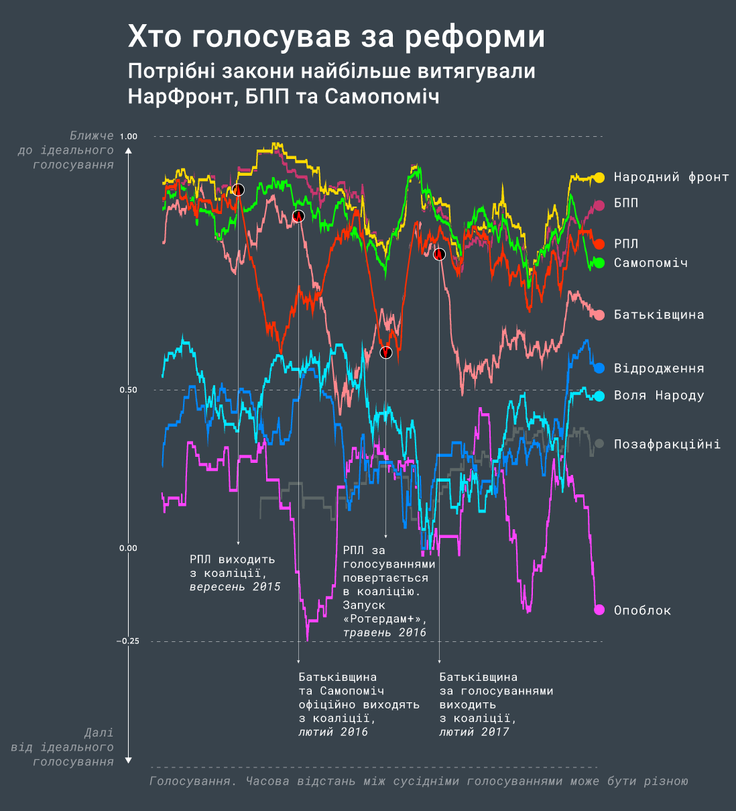
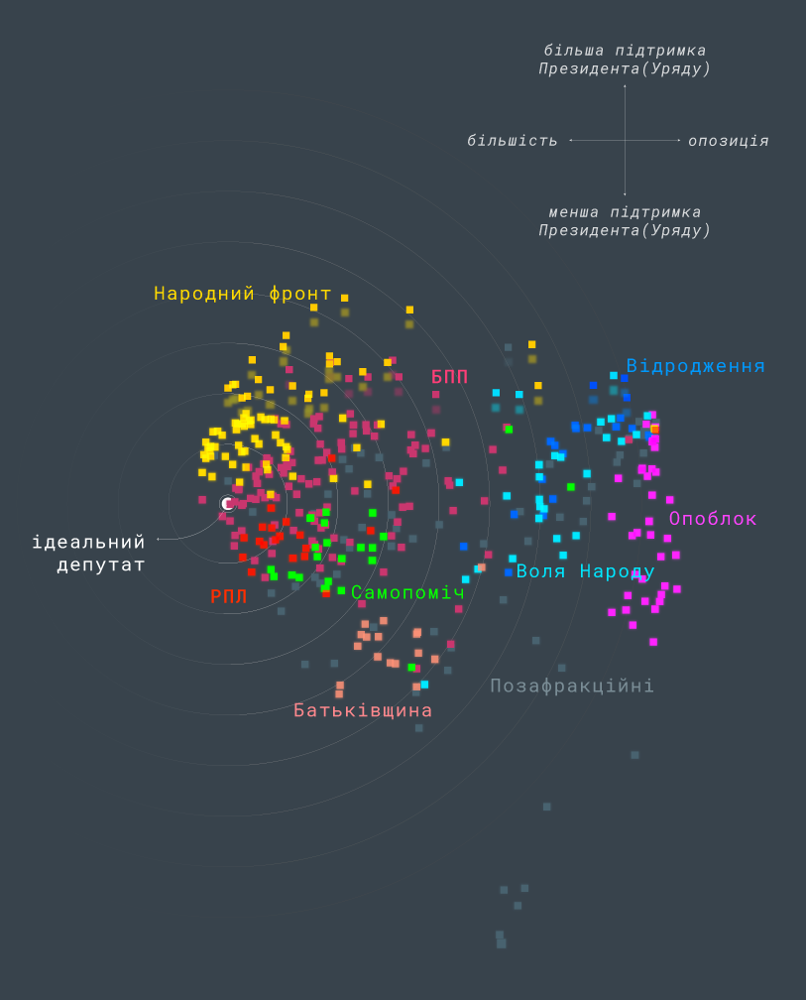
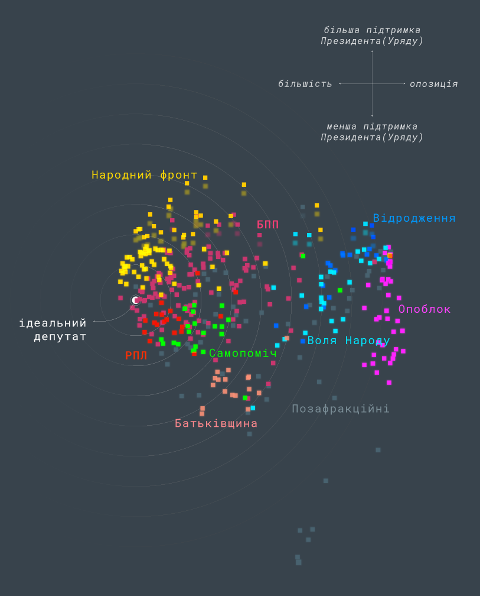
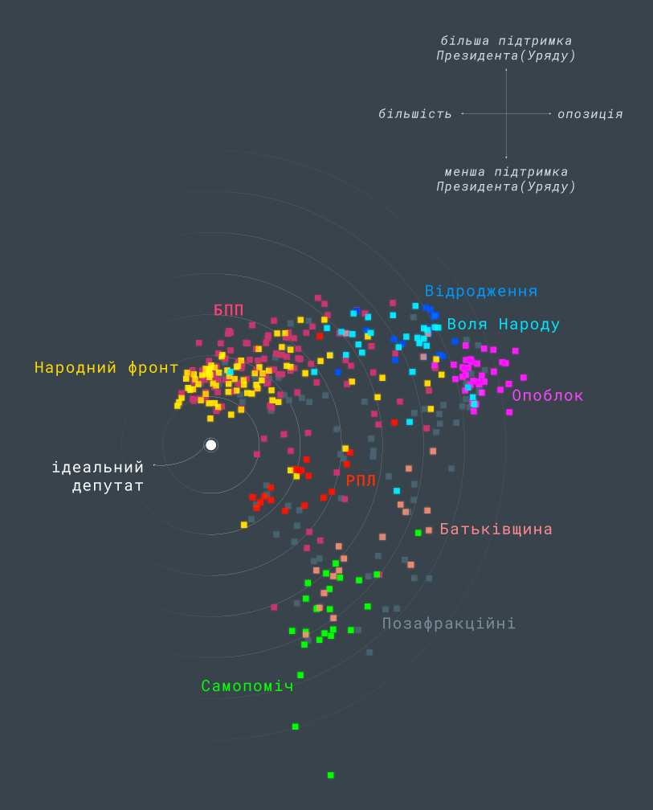
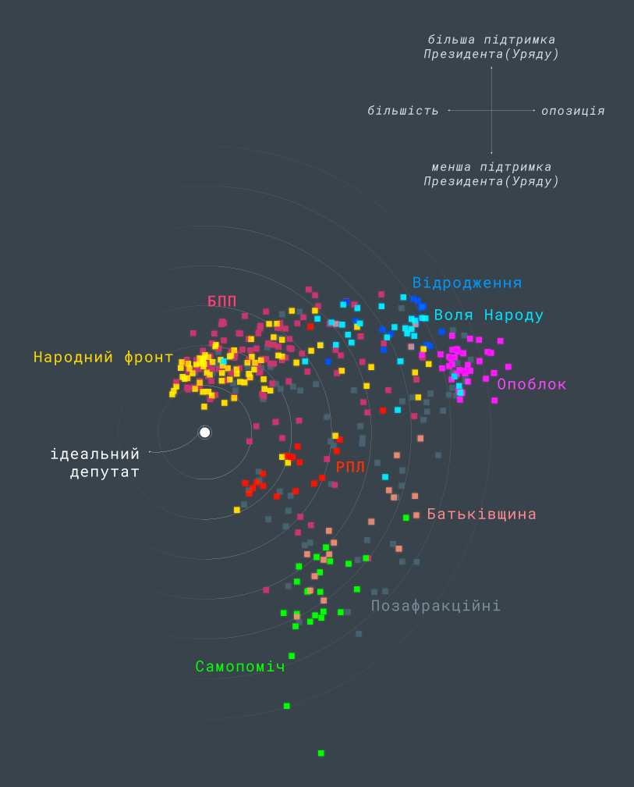

Попри конфлікти та скандали, парламент восьмого скликання створив законодавчу базу для наймасштабніших в історії України реформ у багатьох секторах економіки та державних сервісів, від енергетики до освіти та медицини. Він підтримав та закріпив зовнішньополітичний курс в ЄС та НАТО, дозволив відновити армію й стримати російську агресію на сході країни. І зробив найбільше за всі інші скликання для захисту й підтримки української ідентичності (детальніше читайте в нашій статті).
Ми дослідили, хто з депутатів голосував за реформаторські та проукраїнські закони. Найпослідовнішим виявився Народний Фронт, лише трохи від нього відстають ББП та Самопоміч, яка під кінець роботи цієї Ради дещо відійшла від лідерів. Ці три фракції переважно забезпечували голосування за реформи.
Для того, щоб побачити загальну картину, можна розташувати кожного депутата на графіку таким чином, щоб схожі (за голосуваннями) народні обранці знаходилися поруч. Графік, що нижче, побудований за допомогою алгоритму, який називається UMAP
Для такого графіка абсолютні координати точок-депутатів не є важливими, головне – наскільки близько вони знаходяться одна від одної: чим ближче, тим більш схоже голосували відповідні депутати. «Найкраще» голосували депутати поруч з позначкою «ідеал», про це буде детальніше розказано далі у статті.
Інтерактивна «карта» восьмої ВР
Знайдіть депутата або наведіть на точку, щоб подивитись ПІБ депутата і його політичну приналежність.
Графік інтерактивний: ви можете знайти депутата, який вас цікавить, у формі пошуку, або навести мишкою. Можна виявити несподівані моменти: наприклад, відома борчиня з медичною реформою (і матюками) депутатка Ольга Богомолець формально була в БПП, але за голосуваннями її місце – в «Опоблоці».
Графік інтерактивний: ви можете знайти депутата, який вас цікавить, у формі пошуку. Можна виявити несподівані моменти: наприклад, відома борчиня з медичною реформою (і матюками) депутатка Ольга Богомолець формально була в БПП, але за голосуваннями її місце – в «Опоблоці».
Також існують інші способи оцінити, наскільки «хорошим» був депутат. Якщо вибрати лише важливі, знакові голосування та обрати «так» для кожного хорошого законопроекту, або «ні» для кожного поганого – то таким чином можна створити «ідеального депутата». Після створення такого неіснуючого ідеального законотворця, з ним можна порівнювати результати голосування реальних народних обранців. Для того, щоб вибрати лише голосування за найбільш важливі законопроекти, ми скористувалися сервісом rada4you.org від громадянської мережі ОПОРА, та списком рекомендованих / не рекомендованих законопроектів від Реанімаційного Пакету Реформ, і на основі цього списку створили «ідеального» депутата.
Тепер, коли у нас є такий взірець, ми можемо математично визначити, наскільки схожими на нього є всі інші, реальні депутати: чим більше вони схожі, тим краще голосували відповідні народні обранці. Ось рейтинг, який ми отримали після такого підрахунку:
Рейтинг депутатів
Так само можна подивитися, як структурно змінювалася ВР поточного скликання, якщо порахувати, наскільки схоже до «ідеалу» голосували фракції у цілому. Для цього, наприклад, використаємо метод «простої більшості» – тобто, якщо більша частина фракції проголосувала «за» якийсь законопроект, ми вважаємо, що це голос «за». Тепер можна знову порахувати відмінність від «ідеального депутата», але зробити це не за весь час, а за різні періоди. Таким чином ми побачимо, як змінювалися ВР у часі (чим вище розташований графік, тим краще голосувала фракція).
 

У верхній частині графіка – ті фракції, які найбільше голосували за реформаторські законопроекти. З нього видно, що найбільше підтримували реформи три фракції: Народний Фронт, БПП та Самопоміч. Радикальна партія перестала голосувати за них у 2015-2016 роках, але згодом повернулася. Батьківщина також стала менше голосувати за реформи після літа 2015 року, і вже не повернулася до попередніх темпів. Колишні регіонали опинилися у нижній частині списку – реформи вони стабільно не підтримували.
Можна дослідити динаміку змін ВР ще детальніше. Для цього використаємо інший спосіб, який називається аналіз принципових компонент (PCA). Сенс його в тому, щоб показати депутатів ВР у нових координатах, в яких найкраще видно відмінність між їхніми голосуваннями. Що це за координати? Зазвичай головні відмінності проходять за такими напрямками, як «більшість-опозиція», або «ліві-праві».
Щоправда, чим менше ми при цьому візьмемо таких вимірів, тим менше залишається інформації. Однак, навіть якщо взяти лише два перших таких напрямки(компоненти), умовно X та Y, то для 8-ї Верховної Ради зберігається ~40% інформації про відмінності у голосуваннях. Цікаво, що цей показник значно менший, ніж, наприклад, у попередньому польському парламенті – там депутати сильніше відрізнялися, і навіть декілька перших компонент зберігають ~70% інформації про відмінність у голосуваннях. Можна припустити, що принципові відмінності між депутатами у Раді не настільки значні, як у польському Сеймі.
Однак, для аналізу методом PCA необхідно зрозуміти, що це будуть за компоненти, тобто, який сенс матимуть осі X та Y (коли ми візьмемо лише перших два виміри)? Хороша новина в тому, що нам вдалося їх визначити (детальніше читайте у методології).
Отже, на графіках нижче горизонтальний напрямок (вісь X) – це «більшість проти опозиції», при цьому більшість розташована ліворуч, а опозиція – праворуч. Вертикальний напрямок (вісь Y) – це «суперечності всередині більшості», або сума відмінностей серед партій-учасниць початкової проєвропейської коаліції: між Народним Фронтом, БПП, Самопоміччю, Радикальною партією та Батьківщиною.
Якщо розбити голосування на кілька часових блоків, то можна побачити еволюцію Верховної Ради 8-го скликання. За допомогою нашого методу ми також визначили, за якими напрямками законодавства, та за якими конкретними законопроектами найбільше відрізнялися голосування різних груп у восьмій Раді.
Для прикладу, ми розбили всі важливі голосування на три періоди:
— Повна проєвропейська коаліція (від початку роботи – до 01.09.2015, коли її залишила Радикальна Партія.
— Період з 01.09.2015 до 18.02.2016 (до моменту, коли з коаліції зрештою виходять Самопоміч та Батьківщина).
— Період з 18.02.2016 до липня 2019. У цей період в коаліції де-факто залишаються лише Народний Фронт та БПП.
I-й етап, упродовж якого існувала коаліція з п’яти партій
з дня початку роботи ВР до моменту виходу Радикальної партії Ляшка, РПЛ
 

Відмінності по осі Y (всередині коаліції) – незначні, всі фракції, крім Батьківщини, сконцентровані поруч.
Більшість-опозиція
Найсуттєвіші відмінності між більшістю (БПП, НФ, Батьківщина, РПЛ, Самопоміч) і меншістю (Опозиційний Блок, групи Відродження та Воля Народу, а також частиною позафракційних депутатів) у цьому періоді виникли щодо законопроектів про визнання Російської Федерації країною-агресором (опозиція голосувала проти); а також пропозицій, ініційованих кабінетом Арсенія Яценюка – затвердження його програми, податкового регулювання, банківської, пенсійної системи та інших питань соціальної та економічної політики.
По окремих голосуваннях найбільша відмінність була на голосуваннях про зняття недоторканності з Сергія Мельничука (нардеп від партії Ляшка) та про підтримку Віктора Шокіна на посаду генпрокурора.
Всередині коаліції
Відмінності були й по голосуваннях щодо децентралізації – наприклад, менші партнери в коаліції (Батьківщина, Самопоміч, РПЛ) проголосували категорично проти запропонованого БПП проекту №2217а, який передбачав зміни до Конституції. «Демократична опозиція» підозрювала, що цей законопроект може сприяти визнанню окупації Донбасу, адже там, окрім загальноукраїнської децентралізації, згадувалося й про «особливий порядок місцевого самоуправління на Донбасі», який мав бути встановлений після відновлення контролю над кордоном.
Це була частина Мінських угод, і це голосування дозволяло формально продемонструвати їх виконання, на чому наполягали західні союзники, запроваджуючи санкції проти Росії. Законопроект розглядали довго, але в 2015 під час його розгляду кинули гранату біля входу до ВР. Також розбіжності всередині більшості були, наприклад, щодо погашення заборгованості перед Нафтогазом та щодо підвищення пенсійного віку.
Що стосується окремих голосувань, то найбільше коаліцію розділяли голосування щодо поправок Ігоря Луценка, Єгора Соболєва, Віктора Чумака стосовно функціювання НАБУ та НАЗК. Також розбіжності виникли щодо встановлення штрафів Антимонопольним комітетом (авторства депутатки Вікторії Пташник та інших) – за нього проголосувала більшість коаліції, крім Народного Фронту. А ще – щодо законопроекту про покарання депутатів-кнопкодавів (Батьківщина, РПЛ та Самопоміч дали практично 100% результат, на відміну від НФ та БПП).
ІІ-й етап, вересень 2015 – лютий 2016
у кінці періоду з коаліції виходять Самопоміч та Батьківщина
Другий етап роботи Верховної ради почався з того, що Радикальна партія вийшла з коаліції 1 вересня 2015 року. Формальна причина – голосування за закон, що офіційно називався «Про децентралізацію», але насправді мова йшла про самоуправління на окупованому Донбасі. Утім, фактично Радикальна партія почала віддалятися від коаліції трохи раніше – з початку літа.
Більшість-опозиція
На цьому етапі парламентську більшість та опозицію найбільше розділили голосування щодо створення агентства з повернення активів Януковича та закону про спецконфіскацію. Коаліція була, природньо, за, «біло-синя»опозиція – проти. Іншим конфліктним голосуванням був проект постанови про скасування позачергових виборів у місті Кривий Ріг у березні 2016 року.
За крісло мера Кривого Рогу змагалися Юрій Вілкул – батько Олександра Вілкула, одного з лідерів Опозиційного Блоку, та Юрій Милобог – голова місцевого осередку Самопомочі. Переміг Вілкул, але різниця між ним і Милобогом була менше 1%. Організації, що спостерігали за виборами, заявили про чисельні порушення, і після протестів місцевих жителів Верховна Рада прийняла постанову про нові вибори в Кривому Розі. Саме цю постанову хотіли скасувати депутати від Опозиційного блоку.
Всередині екс-коаліції
З кінця 2015 року в коаліції накопичувалися непорозуміння. Самопоміч та особливо Батьківщина й Радикали суттєво відходять від решти більшості. Великі розбіжності всередині екс-коаліції утворилися під час голосування за закони, які подавала й підтримувала Самопоміч.
По окремих голосуваннях, найбільшими відмінностями вирізнялися голосування щодо скорочень соціальних виплат (проти були Батьківщина та РПЛ), та щодо бюджетного процесу (Самопоміч та РПЛ не підтримували низку пропозицій Кабміну).
Третій етап, лютий 2016 - липень 2019
 

На третьому етапі роботи парламенту Батьківщина суттєво віддалилася від початкової коаліції і тривалий час була майже у зоні опозиції. Водночас, Радикальна партія стала значно ближчою до коаліції НФ-БПП, ніж на попередньому етапі. Подейкують, що формула Роттердам+, яка була вигідна Ринату Ахметову, стимулювала «радикалів» голосувати за реформи.
Опозиція - екс-Більшість
У цей період опозиція систематично голосувала проти законопроектів, які висунула або підтримала коаліція. Опозиція також намагалася затвердити атрибути «русского міра» та воювала проти української ідентичності: опозиційні депутати намагалися скасувати заборону «георгіївських стрічок», а також вимоги щодо квот української мови в ефірі.
Крім того, опозиція не підтримала медичну реформу (закон про фінансування медицини), законопроекти щодо змін у зовнішньополітичному курсі (закріплення руху до НАТО та ЄС), та була проти підтримки української мови як державної.
Батьківщина, РПЛ та опозиційні фракції вдало проголосували проти скасування мораторію на продаж земель.
Щодо конкретних законопроектів, то найбільш відмінними, крім згаданих тем, були голосування щодо особливостей суверенітету на окупованих територіях, про Томос, про зміну назви для УПЦ МП, про введення воєнного стану в Україні (екс-коаліція підтримала це голосування, «Опозиційний блок» майже повністю був проти).
Відмінність всередині «проєвропейського» табору
Постанови про звільнення суддів через порушення, які вони вчинили; та проекти, підтримані фракцією Самопомочі та Батьківщини, викликали найбільшу розбіжність всередині умовного про-європейського табору. За звільнення суддів фракції Батьківщина, Самопоміч, Радикальна партія давали майже 100% голосів. БПП і НФ – менше, або голосували проти у випадку частини суддів.
По окремих законопроектах найбільша відмінність серед фракцій екс-коаліції була у голосуваннях за зміни, що були необхідні для призначення Юрія Луценка на посаду генпрокурора (Батьківщина, Самопоміч були категорично проти), про відкликання Єгора Соболєва з посади в антикорупційному комітеті ВР (знову Батьківщина, Самопоміч були категорично проти), та про ринок електроенергії (Батьківщина, Самопоміч та РПЛ голосували у більшості своїй проти).
Якщо коротко, то саме такою була Верховна Рада 8-го скликання під час цих трьох етапів. На відміну від масово поширеної суспільної думки це був, поки що, найкращий парламент за роки незалежності. Наголосимо, що більшу частину опису, який ви щойно прочитали, з переліченими напрямками законотворчості та назвами окремих законопроектів, ми зробили використовуючи лише результати голосувань та інформацію про законопроекти, не звертаючись до інших джерел. Як працює цей метод, трохи детальніше можна прочитати в Методології.